LRT-1 Trainspotting
By Justin LRT
In this page, its all about my LRT-1 trainspotting by taking photos and videos.
At Home
I start my first trainspotting on August 3, 2021 as photos.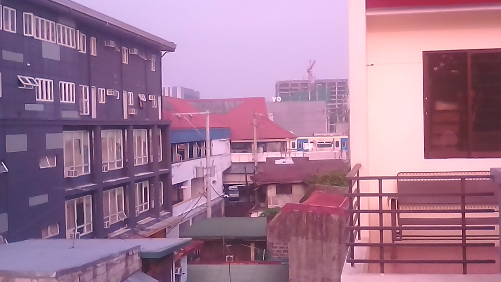
First photo of LRT-1 from my home. Taken on August 3, 2021
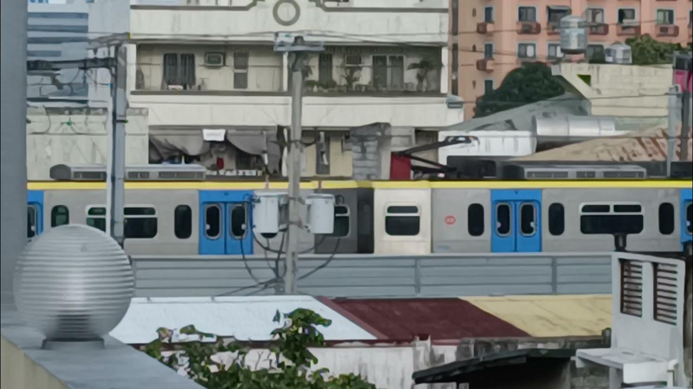
My second LRT video was caught and uploaded on YouTube in September 14, 2021. I titled it as first because I uploaded the LRT video on YouTube for the first time.
Video 
On September 14, 2021, my trainspotting video was uploaded on YouTube for the first time.
As I continues to stay at the top of my home, I did trainspotting activities as much as I could. On November 5, 2022, I decided to go up to the 4th floor to do trainspotting activities and 12 trains were spotted for the session. Sadly, my last video for trainspotting activities in that place.
My final images of LRT-1 at top of my home were on November 15, 2022. And finally, on November 25, 2022, I moved to a new home. He miss all the activities where I was doing trainspotting without leaving the house. Then I proceeded to Pasay Rotonda trainspotting.
EDSA-Taft Pasay Rotonda

I started trainspoting on November 10, 2022. I'm so excited for my first trainspotting video. On the following days, I am able to do trainspotting anywhere at Pasay Rotonda.
These are the places in Pasay Rotonda where I do trainspotting activities:
These are the places in Pasay Rotonda where I do trainspotting activities:
| Place | Date started | Image |
|---|---|---|
| Metro Point sidewalk | November 10, 2022 | 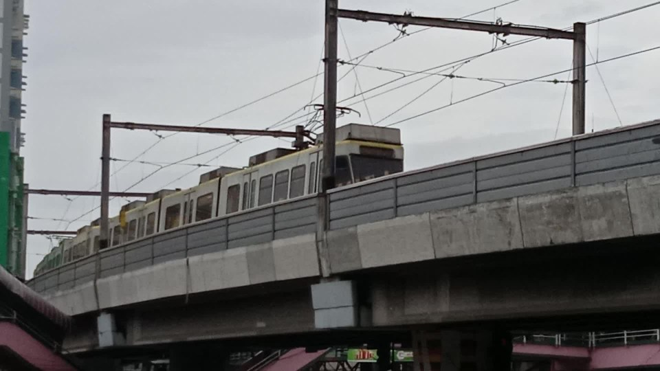 |
| LRT-MRT footbridge | November 23, 2022 | 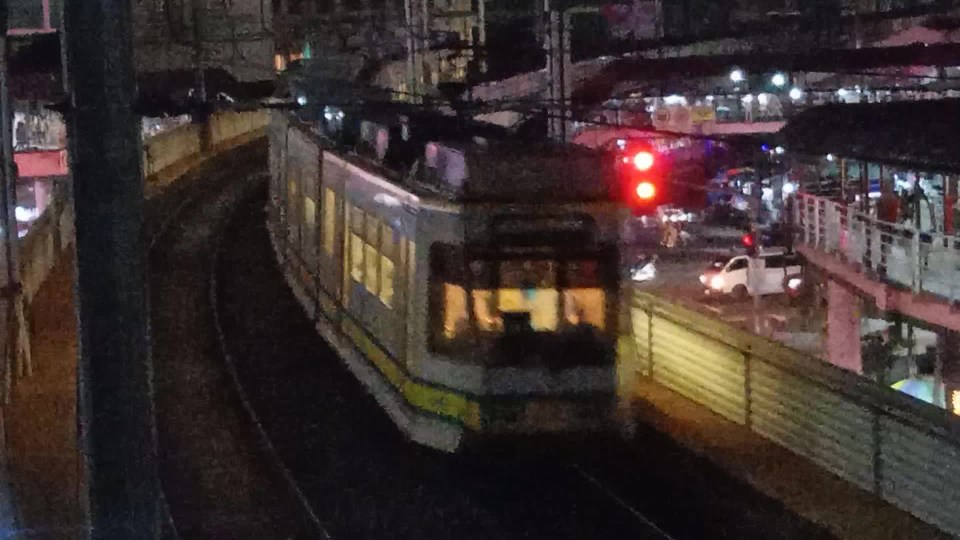 |
| Front of McDonald's | December 2, 2022 | 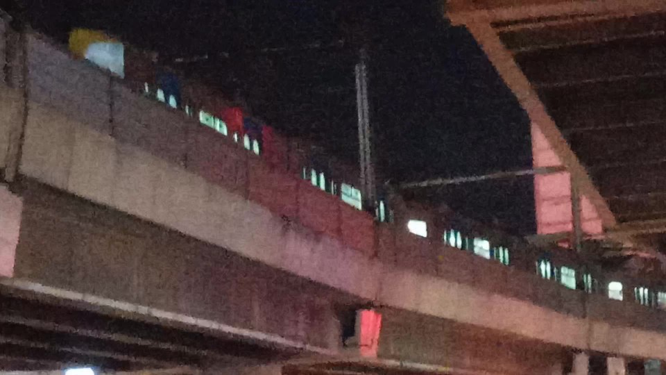 |
| Pasay Rotonda footbridge Above EDSA |
December 11, 2022 | 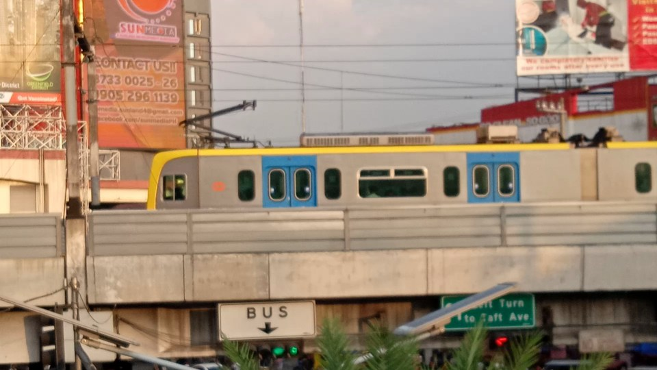 |
| Pasay Rotonda footbridge Above Taft Avenue West |
December 11, 2022 | 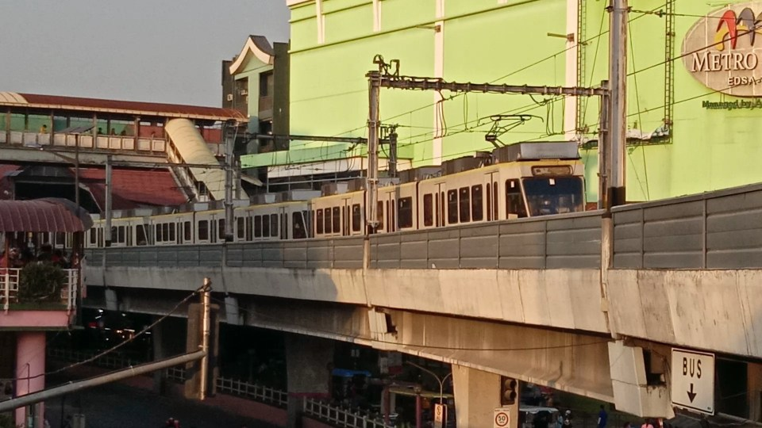 |
| EDSA-Taft street level | December 13, 2022 | 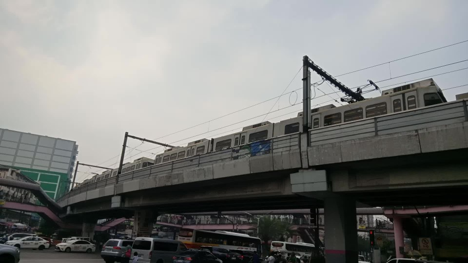 |
| Pasay Rotonda footbridge Above Taft Avenue East |
December 15, 2022 | 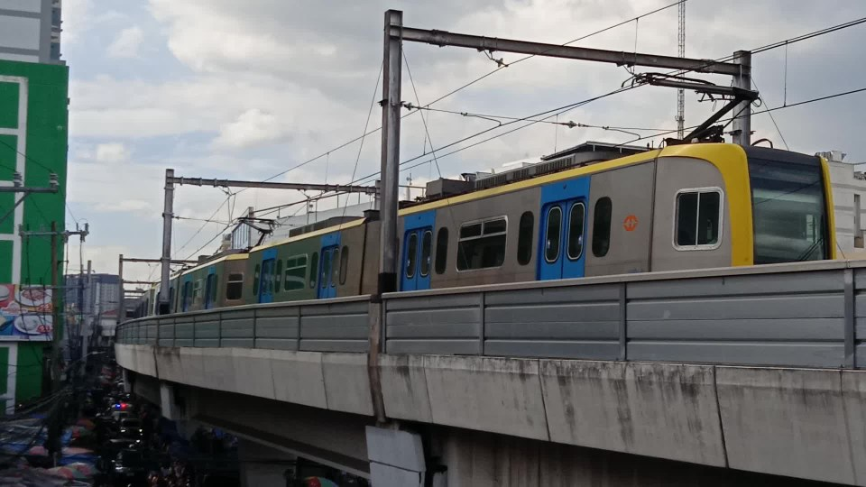 |
| Pasay Rotonda footbridge To LRT-1 EDSA |
December 15, 2022 | 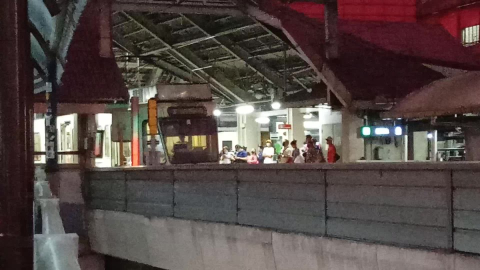 |
| MRT-3 Taft Avenue footbridge | December 15, 2022 | 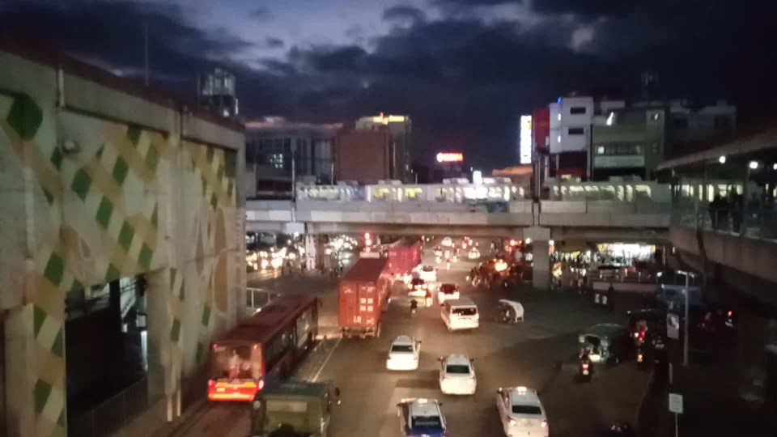 |
| EDSA Sidewalk | December 22, 2022 | 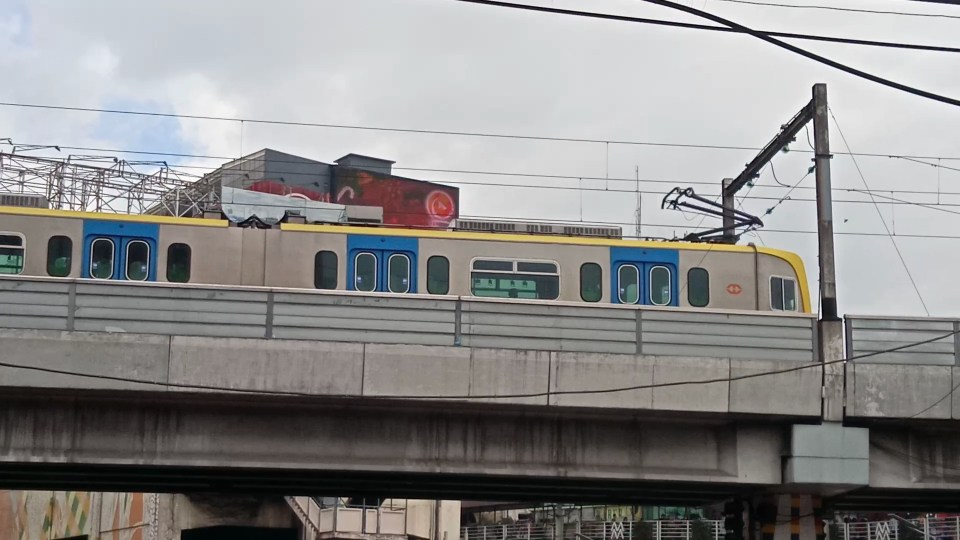 |
| Footbridge at top of LRT-1 EDSA | January 3, 2023 | 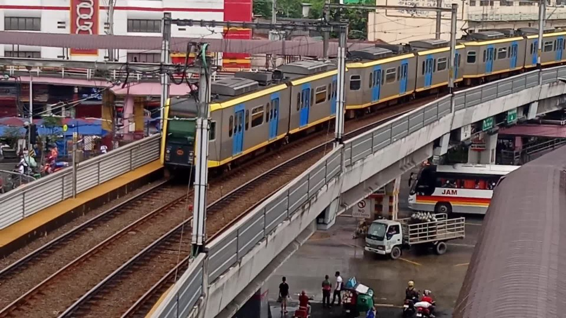 |
| Two Shopping Center footbridge | February 6, 2023 | 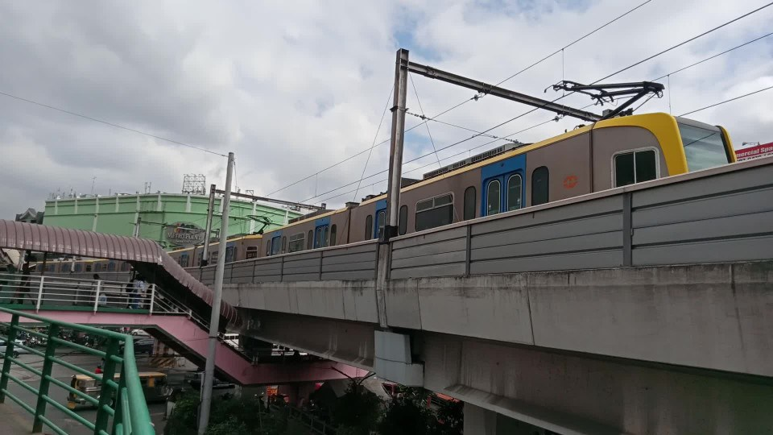 |
In December 2023, I am unable to do regular trainspotting activities at that place because I moved to a new home again that I am no longer lived near Pasay Rotonda area.
Watch LRT-1 Pasay Rotonda trainspotting videos